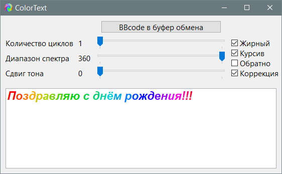

PureBasic
ColorText
Назначение
Создание разноцветных поздравительных текстов.

Взаимосвязанные
ColorTextОписание
Утилита для создания поздравительных сообщений на форумах и в офисных документах. Для обработки необходимо вставить строку в утилиту и регулировать цвет. При нажатии кнопки "BBCode в буфер обмена" код отправляется в буфер обмена, далее вставить его в сообщение на форуме, установить размер шрифта, выполнить предпросмотр средствами форума, и если устраивает, то отправить. Преимущество в отличии от аналогичных утилит в том, что есть возможность визуально регулировать цветовой градиент.